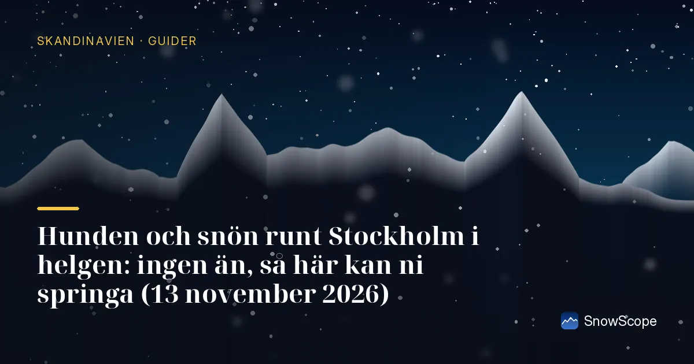

Hunden och snön runt Stockholm i helgen: ingen än, så här kan ni springa (13 november 2026)
Om din hund har väntat på sin första rullning i snön så levererar inte Stockholm i helgen. Stadens väderstation på Observatoriekullen mätte 0 cm på fredagen, precis som alla stationer runt omkring. Här är vad ni kan göra i stället, och var snön faktiskt finns.
Se snöprognosen för Stockholm live i SnowScope-appenSnödjup, pudervarningar och 3D-kartan, gratis.
Hur långt bort är snön?
Närmaste uppmätta snö är 2 cm i Norrveda, 75 km norr om stan. Riktig vit mark börjar norr om 60:e breddgraden: där uppe är 21 av 37 stationer vita. Med en torr, mild helg, från runt 0 °C på natten till 7 °C på söndagen, ändras ingenting i stan före måndagens regn.

Var hunden får springa lös i Stockholm
I Stockholm är det koppeltvång på offentlig plats: hunden ska vara kopplad på gator, i parker och på allmänna platser. Undantaget är stadens hundrastplatser. De finns i två sorter: en hundrastgård är inhägnad och hunden får springa lös där inne; ett hundrastområde är inte inhägnat, och hunden får vara lös bara om du har den under uppsikt och den kommer när du ropar. Stadens parksidor listar alla, med karta.
Den nationella regeln om att hindra hundar från att springa lösa där det finns vilt gäller 1 mars till 20 augusti, så den gäller inte i november. Men i naturreservaten ber staden om koppel på all allmän mark där inget hundrastområde är markerat, och Naturvårdsverket ber om detsamma i alla nationalparker och naturreservat.
En skogspromenad med inhägnad rastgård: Nackareservatet
I Stockholmsdelen av Nackareservatet finns en inhägnad hundrastgård i dalen mot Söderbysjön, intill sittplatser, en groddamm och ett utegym. Du når den från Björkhagenhållet, vid golfklubbens entré. I resten av reservatet är hunden kopplad.
Tips för skidåkare
- Eftermiddagarna blir tidigt mörka: reflexväst eller lampa på halsbandet hjälper på skogsstigarna.
- Skölj tassarna efter promenader på grusade eller saltade gångvägar.
- Kör du norrut efter snö, kolla det uppmätta snödjupet där du ska: det vita bältet går den här veckan från norra Dalarna till Västerbotten.
Fler kartor (externa webbplatser)
Referenser och källor
- SMHI, open meteorological observations (snow depth, daily) www.smhi.se/data/meteorologi/ladda-ner-meteorologiska-observationer
- City of Stockholm, dog areas and leash rules (hundrastplatser) parker.stockholm/hundrastplatser/
- City of Stockholm, Nackareservatet nature reserve parker.stockholm/naturreservat/nackareservatet/
- City of Stockholm, rules in the nature reserves parker.stockholm/naturreservat/foreskrifter-regler/
- Naturvårdsverket, dogs in nature (allemansrätten) www.naturvardsverket.se/amnesomraden/allemansratten/sa-gor-vi-allemansratt/hundar-i-naturen/
- Sveriges riksdag, lag (2007:1150) om tillsyn över hundar och katter, 16 § www.riksdagen.se/sv/dokument-och-lagar/dokument/svensk-forfattningssamling/lag-2007-1150-om-tillsyn-over-hundar-och-katter_sfs-2007-1150/
- Open-Meteo, weather forecast data (ECMWF and ICON models) open-meteo.com/
Om siffrorna
Snödjup i dag: uppmätt vid väderstationer på morgonen den 13 november 2026 (SMHI). En station mäter snön på sin egen lilla yta, så några kilometer bort och hundra meter högre kan marken se annorlunda ut. Normalt snödjup för datumet: SnowScopes snöhistorik, 46 vintrar (1980-81 till 2025-26), en modell av det förflutna på stadens höjd, inte en stationsserie. Helgen: två vädermodeller (ECMWF IFS och DWD ICON via Open-Meteo), angivna som ett spann. Platser och regler: de officiella sidorna nedan.
Citera den här rapporten
För forskning, undervisning eller press: siffrorna och diagrammen får återanvändas fritt under CC BY 4.0 med den här källhänvisningen.
SnowScope (2026), Hunden och snön runt Stockholm i helgen: ingen än, så här kan ni springa (13 november 2026), https://snowscope.app/blog/sv/2026/11/stockholm-dog-snow-weekend-13-november-2026.html, hämtad 2026-11-13
SnowScope (Atlas Labs). (2026, November 13). Hunden och snön runt Stockholm i helgen: ingen än, så här kan ni springa (13 november 2026). SnowScope snow reports. https://snowscope.app/blog/sv/2026/11/stockholm-dog-snow-weekend-13-november-2026.html
BibTeX
@misc{snowscope2026stockholmdogsnowweekend1,
author = {{SnowScope (Atlas Labs)}},
title = {Hunden och snön runt Stockholm i helgen: ingen än, så här kan ni springa (13 november 2026)},
year = {2026},
month = nov,
howpublished = {\url{https://snowscope.app/blog/sv/2026/11/stockholm-dog-snow-weekend-13-november-2026.html}},
note = {Published 2026-11-14 13:29 UTC; accessed 2026-11-13}
}· CC BY 4.0 · Metoder, data och verktyg →
Följ Stockholm
Gratis: ett meddelande när nysnö är på väg, och prognosen varje morgon.